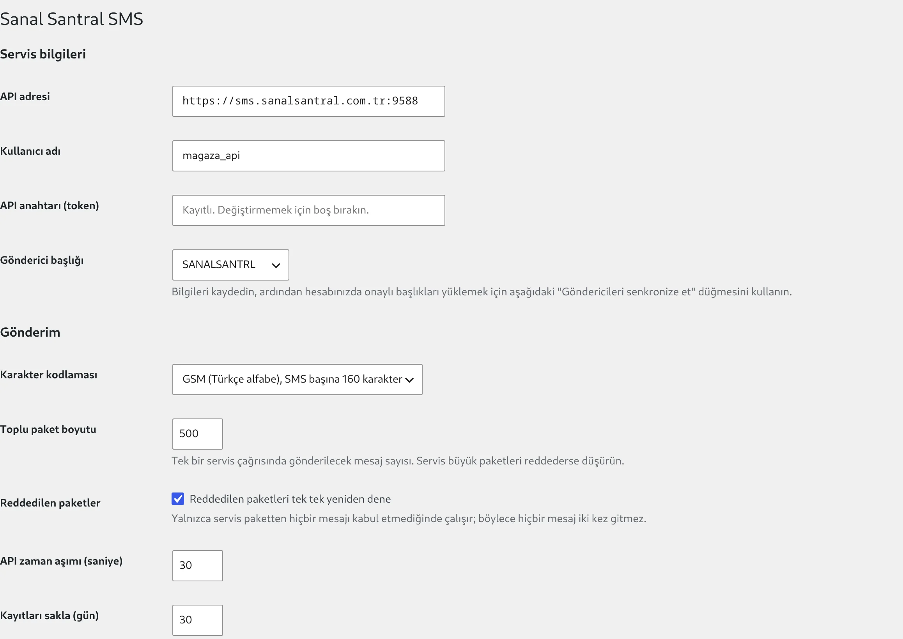
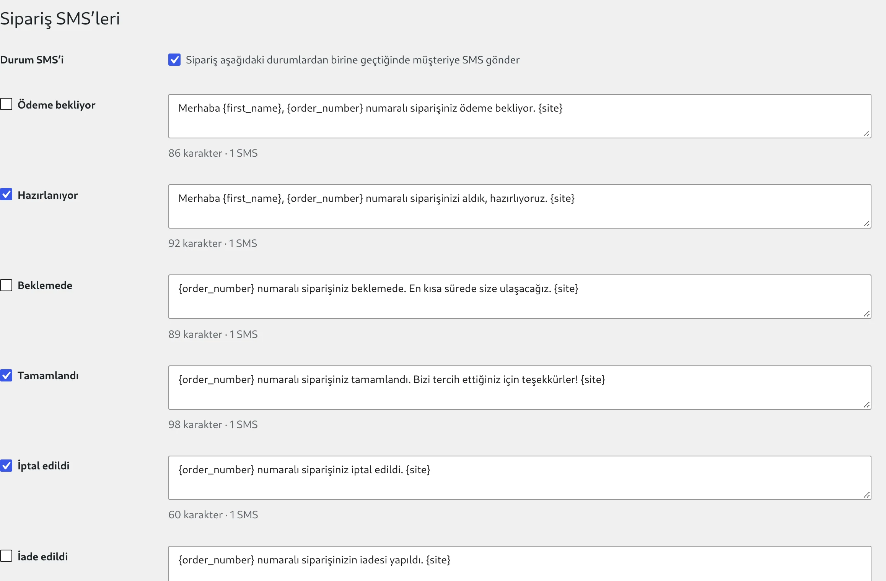
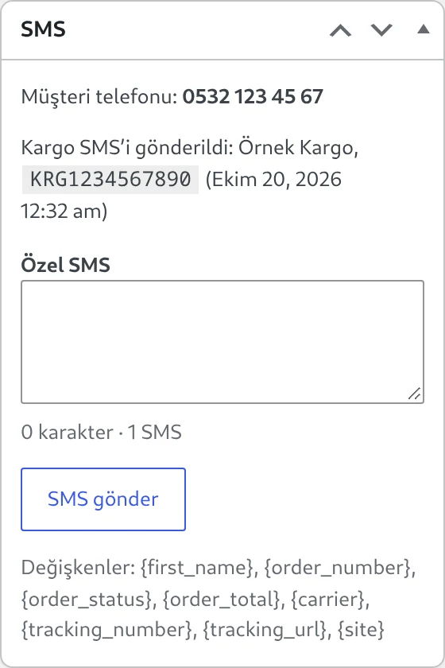
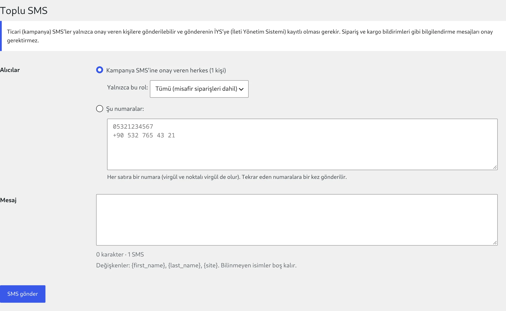
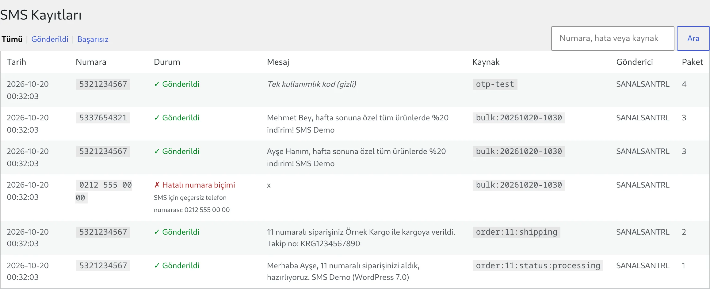

1Gereksinimler
- WordPress 7.0 veya 7.1, PHP 7.4 ya da üstü.
- Sanal Santral SMS hesabı: API kullanıcı adı, API anahtarı (parola) ve onaylı en az bir SMS başlığı.
- Sipariş ve kargo SMS'leri için WooCommerce. HPOS (yüksek performanslı sipariş depolama) ve blok ödeme sayfası desteklenir.
- Sunucunun
sms.sanalsantral.com.tradresine9588portundan çıkış yapabilmesi.
SMS yalnızca Türkiye cep numaralarına (5XX) gönderilir. Sabit hat ve yurt dışı numaralar gönderilmeden ayıklanır ve nedeniyle kayda geçer.
2Kurulum
- sanalsantral-sms.zip dosyasını indirin.
- WordPress panelinde Eklentiler > Yeni Eklenti Ekle > Eklenti Yükle yolunu izleyin, zip dosyasını seçip Şimdi Kur'a basın.
- Eklentiyi Etkinleştir deyin. Sol menüde Sanal Santral SMS belirir.
FTP ile kurmak isterseniz zip'in içindeki sanalsantral-sms klasörünü wp-content/plugins/ altına kopyalayıp eklentiyi etkinleştirmeniz yeterli.
WP-CLI ile
wp plugin install https://github.com/Sanal-Santral/wordpress-sms-sanalsantral/releases/latest/download/sanalsantral-sms.zip --activateKurulum betiği iki eklentiyi kurar, API bilgilerini yazar, başlıkları senkronize eder ve isterseniz test SMS'i gönderir. Web sunucusu kullanıcısıyla çalıştırın:
curl -fsSL https://raw.githubusercontent.com/Sanal-Santral/wordpress-sms-sanalsantral/main/install.sh \
| sudo -u www-data sh -s -- --path=/var/www/html \
--username=API_KULLANICI --api-key=API_ANAHTARI --sender=BASLIK --test-phone=05XXXXXXXXXGüncellemeler
GitHub'dan kurulan eklenti yeni sürümleri Eklentiler ekranında "yeni sürüm var" olarak gösterir; tek tıkla ya da otomatik güncellemeyle kurulur. WordPress.org dizininden kurulan sürümler WordPress.org üzerinden güncellenir.
Etkinleştirme sırasında SMS kayıt tablosu oluşturulur ve eski kayıtları temizleyen günlük görev planlanır. Başka bir işlem gerekmez.
3Hesabı bağlama
- Sanal Santral SMS > Ayarlar sayfasını açın.
- API adresi varsayılan olarak
https://sms.sanalsantral.com.tr:9588gelir; değiştirmeyin. - Kullanıcı adı ve API anahtarı (token) alanlarına Sanal Santral'dan aldığınız API bilgilerini yazın ve Değişiklikleri kaydet'e basın. Eklenti istekleri
Authorization: Basic base64(kullanıcı:parola)başlığıyla gönderir. - Sayfanın altındaki Göndericileri senkronize et düğmesine basın. Hesabınızdaki onaylı başlıklar listeye gelir; hesapta tek başlık varsa otomatik seçilir.
- Gönderici başlığı listesinden SMS'lerin hangi isimle gideceğini seçip tekrar kaydedin.

Kullanıcı adını veya API adresini değiştirdiğinizde eski hesabın başlık listesi silinir; göndericileri yeniden senkronize edin.
4Test SMS'i
Ayarlar sayfasının en altındaki Test SMS'i gönder bölümüne kendi cep numaranızı ve bir mesaj yazıp gönderin. Sonuç sayfanın üstünde görünür ve SMS Kayıtları'na düşer.
Numarayı nasıl yazdığınızın önemi yok; 0532 123 45 67, +90 532 123 45 67, 905321234567 ve (0532) 123-45-67 aynı numaraya gider.
5Gönderim ayarları
| Ayar | Açıklama | Varsayılan |
|---|---|---|
| Karakter kodlaması | GSM (Türkçe alfabe) SMS başına 160 karakter, Unicode 70 karakter taşır. Emoji gibi özel karakterler kullanmıyorsanız GSM'de kalın. | GSM |
| Toplu paket boyutu | Toplu gönderimde tek servis çağrısına giren mesaj sayısı. | 500 |
| Reddedilen paketler | Servis bir paketin tamamını reddederse mesajları tek tek yeniden dener. Yalnızca paketten hiçbir mesaj kabul edilmediğinde çalışır, kredi ve başlık hatalarında çalışmaz. | Açık |
| API zaman aşımı | Servisten yanıt beklenecek süre (saniye). Süre dolarsa mesajlar "iletim durumu bilinmiyor" olarak işaretlenir ve tekrar gönderilmez. | 30 |
| Kayıtları sakla | SMS kayıtlarının kaç gün tutulacağı. 0 silmez. | 30 |
Her mesaj kutusunun altındaki sayaç, metnin kaç karakter ve kaç SMS tutacağını anlık gösterir.
6WooCommerce sipariş SMS'leri
- Sanal Santral SMS > Sipariş SMS'leri sayfasını açın.
- Durum SMS'i kutucuğunu işaretleyin.
- SMS gönderilmesini istediğiniz durumları seçin ve şablonları düzenleyin, ardından kaydedin.

SMS, siparişin fatura telefonuna (yoksa teslimat telefonuna) gider. Gönderilen ya da gönderilemeyen her SMS siparişe not olarak eklenir.
Şablon değişkenleri
| Değişken | Değer |
|---|---|
{first_name} {last_name} | Fatura adı ve soyadı |
{order_number} | Sipariş numarası |
{order_status} | Siparişin güncel durumu (Türkçe) |
{order_total} | Sipariş tutarı, para birimiyle |
{order_url} | Müşterinin sipariş detay sayfası |
{carrier} {tracking_number} {tracking_url} | Kargo firması, takip numarası ve takip linki |
{site} | Site adı |
Siparişe özel SMS
Sipariş düzenleme ekranının sağındaki SMS kutusundan o siparişin müşterisine serbest metin gönderebilirsiniz; aynı değişkenler burada da geçerlidir. Kargo SMS'i gönderilmişse kutuda firma, takip numarası ve gönderim zamanı görünür.

7Kargo entegrasyonu SMS'i (geliştiriciler için)
Kargo SMS'inin elle doldurulan bir formu yoktur: takip numarası kargo eklentinizde, ERP'nizde ya da kargo firmasının bildiriminde oluşur ve oradan eklentiye iletilir. Eklenti numarayı siparişe kaydeder, Sipariş SMS'leri > Kargo SMS'i şablonunu doldurur, müşteriye gönderir ve siparişe not düşer.
Mükerrer koruma: aynı sipariş ve aynı takip numarası için SMS yalnızca bir kez gider. Entegrasyonunuz her senkronizasyonda ya da her yeniden denemede çağırabilir. Bilerek tekrar göndermek için force kullanın.
Önce ayarlar
- Mesaj: varsayılanı "{order_number} numaralı siparişiniz {carrier} ile kargoya verildi. Takip no: {tracking_number} {tracking_url}".
- Varsayılan kargo firması: entegrasyon firma adı göndermezse kullanılır.
- Takip adresi: entegrasyon link göndermezse
{tracking_url}buradan üretilir, örneğinhttps://kargotakip.example.com/?no={tracking_number}.
Yol 1: PHP fonksiyonu
Kargo eklentinizle aynı WordPress'te çalışan kod için en doğrudan yol.
$result = ss_sms_wc_send_shipping( $order_id, array(
'tracking_number' => 'KRG1234567890', // zorunlu
'carrier' => 'Örnek Kargo', // isteğe bağlı
'tracking_url' => 'https://...?no=KRG1234567890', // isteğe bağlı
'force' => false, // aynı numaraya tekrar gönder
) );
if ( is_wp_error( $result ) ) {
error_log( $result->get_error_code() . ': ' . $result->get_error_message() );
}Yol 2: WordPress action'ı
Kargo eklentisi bu eklentiye bağımlı olmak istemiyorsa action yayınlar. Sanal Santral SMS kurulu değilse hiçbir şey olmaz, hata da oluşmaz.
// Kargo eklentinizde barkod / takip numarası oluştuğu yerde:
do_action( 'ss_sms_wc_shipped', $order_id, array(
'tracking_number' => $barkod,
'carrier' => 'Örnek Kargo',
) );Kargo eklentinizin kendi kancası varsa, temanızın functions.php dosyasında ona bağlanabilirsiniz:
// Örnek: eklenti takip numarasını sipariş meta'sına yazıyor ve sipariş "Tamamlandı" oluyorsa
add_action( 'woocommerce_order_status_completed', function ( $order_id ) {
$order = wc_get_order( $order_id );
$no = $order->get_meta( '_kargo_takip_no' ); // kargo eklentinizin alanı
if ( $no && function_exists( 'ss_sms_wc_send_shipping' ) ) {
ss_sms_wc_send_shipping( $order, array( 'tracking_number' => $no ) );
}
} );Yol 3: REST API
ERP, depo yazılımı ya da kargo firmasının bildirimleri gibi WordPress dışındaki sistemler için.
- Siparişleri düzenleme yetkisi olan bir kullanıcı (yönetici veya mağaza yöneticisi) için Kullanıcılar > Profil > Uygulama Parolaları bölümünden yeni bir parola oluşturun.
- İsteği bu kullanıcı adı ve uygulama parolasıyla, HTTPS üzerinden gönderin.
curl -X POST "https://magazaniz.com/wp-json/sanalsantral-sms/v1/orders/1234/shipping" \
-u "entegrasyon:abcd EFGH ijkl MNOP qrst UVWX" \
-H "Content-Type: application/json" \
-d '{ "tracking_number": "KRG1234567890", "carrier": "Örnek Kargo" }'| Alan | Tür | Açıklama |
|---|---|---|
tracking_number | metin, zorunlu | Kargo takip numarası |
carrier | metin | Kargo firması; yoksa varsayılan firma |
tracking_url | adres | Takip linki; yoksa takip adresi şablonu |
force | true / false | Aynı takip numarasına yeniden gönder |
Başarılı yanıt:
{ "sent": true, "order_id": 1234, "tracking_number": "KRG1234567890",
"carrier": "Örnek Kargo", "tracking_url": "" }Hata kodları
| HTTP | Kod | Anlamı |
|---|---|---|
| 400 | ss_sms_missing_tracking | Takip numarası boş |
| 401 / 403 | rest_forbidden | Kimlik doğrulama yok ya da kullanıcının sipariş düzenleme yetkisi yok |
| 404 | ss_sms_order_not_found | Sipariş bulunamadı |
| 409 | ss_sms_already_sent | Bu takip numarası için SMS zaten gönderildi; tekrar için force |
| 502 | sms_number_format, sms_credit … | İstek doğru ama SMS gönderilemedi; neden SMS kayıtları tablosundaki hata tipleridir |
Kargo SMS'i başarıyla gittiğinde ss_sms_wc_shipping_sms_sent action'ı ( $order, $tracking_number ) ile tetiklenir. Takip bilgisini kargo eklentinizin kendi alanından okumak için ss_sms_wc_tracking filtresini kullanabilirsiniz. WooCommerce Shipment Tracking eklentisinin kayıtları otomatik okunur.
8Kampanya SMS'i ve onay
Ticari (kampanya) SMS'ler yalnızca onay veren kişilere gönderilebilir ve gönderenin İYS'ye (İleti Yönetim Sistemi) kayıtlı olması gerekir. Sipariş ve kargo bildirimleri bilgilendirme mesajıdır, onay gerektirmez.
Onay nerede toplanır
- Ödeme sayfası: "Kampanya ve tanıtım mesajlarını SMS ile almayı kabul ediyorum." kutucuğu. Blok ve klasik ödeme sayfasında çalışır; misafir siparişlerinde onay siparişe kaydedilir.
- Hesabım > Hesap detayları: müşteri cep numarasını ve onayını kendisi değiştirir.
- Kullanıcı profili: yöneticiler panelden görebilir ve düzenleyebilir.
Onayın verildiği an kullanıcıya ve siparişe kaydedilir. Onay kaldırıldığında kişi bir sonraki kampanyada listede yer almaz.
Toplu gönderim
- Sanal Santral SMS > Toplu SMS sayfasını açın.
- Alıcıları seçin: onay veren herkes (isterseniz tek bir rolle sınırlayın) ya da şu numaralar kutusuna her satıra bir numara yapıştırın.
- Mesajı yazın.
{first_name},{last_name}ve{site}her alıcı için doldurulur. - SMS gönder'e basıp onaylayın. Bitince gönderilen ve başarısız sayısı gösterilir, ayrıntılar SMS kayıtlarına geçer.

Aynı numara listede birden fazla kez geçse de bir kez gönderilir. Geçersiz satırlar atlanır ve sayısı bildirilir.
9SMS kayıtları
Sanal Santral SMS > SMS Kayıtları gönderilen ve başarısız her mesajı tarih, numara, durum, mesaj, kaynak, gönderici ve paket numarasıyla listeler. Duruma göre süzebilir, numara, hata ya da kaynakla arayabilirsiniz.

Kaynak sütunu
| Kaynak | Nereden |
|---|---|
order:123:status:processing | Sipariş durum SMS'i |
order:123:shipping | Kargo entegrasyonu SMS'i |
order:123:custom | Sipariş ekranından özel SMS |
bulk:20261019-1830 | Toplu SMS gönderimi |
test | Ayarlar sayfasındaki test SMS'i |
2fa:… verify:… otp otp-test | OTP eklentisi |
Hata tipleri
| Görünen | Kod | Ne yapmalı |
|---|---|---|
| Numara yok | sms_number_missing | Siparişte ya da profilde telefon yok. |
| Hatalı numara biçimi | sms_number_format | Numara bir Türkiye cep numarası değil (sabit hat, eksik hane). |
| Ülke desteklenmiyor | sms_country_not_supported | Yurt dışı numarası; gönderilmez. |
| Yetersiz kredi | sms_credit | SMS paketinizi yenileyin. |
| Hesap veya başlık sorunu | sms_acc | API bilgilerini ve seçili başlığı kontrol edin. |
| Mükerrer mesaj | sms_duplicate | Servis aynı paketi kısa sürede ikinci kez reddetti. |
| Servis hatası | sms_server | Geçici sorun; bir süre sonra tekrar deneyin. |
Hata metninde "İletim durumu bilinmiyor" yazıyorsa istek servise ulaşmış ama yanıt alınamamıştır; mesaj gitmiş olabilir. Tekrar göndermeden önce Sanal Santral SMS panelinden kontrol edin.
10Geliştirici API'si
Tema ve eklentilerinizden kullanabileceğiniz fonksiyonlar. Hepsi başarıda true, hatada WP_Error döndürür; hata kodu yukarıdaki hata tiplerinden biridir.
// Tek SMS
$r = ss_sms_send( '0532 123 45 67', 'Randevunuz yarın 14:00', array( 'source' => 'randevu' ) );
// Toplu SMS: anahtarlar korunur, her öğe için true ya da WP_Error
$sonuc = ss_sms_send_bulk( array(
'ayse' => array( '05321234567', 'Merhaba Ayşe ...' ),
'mehmet' => array( '05337654321', 'Merhaba Mehmet ...' ),
) );
// Numara yardımcıları
ss_sms_normalize_phone( '+90 532 123 45 67' ); // '5321234567' ya da null
ss_sms_to_e164( '0532 123 45 67' ); // '+905321234567'
ss_sms_user_phone( $user_id ); // profil numarası, yoksa fatura telefonuHata verisinde unknown_state true ise mesaj gitmiş olabilir; otomatik tekrar göndermeyin.
Kancalar
| Kanca | Tür | Ne zaman |
|---|---|---|
ss_sms_sent | action | Bir SMS servis tarafından kabul edildiğinde |
ss_sms_failed | action | Bir SMS gönderilemediğinde |
ss_sms_wc_shipped | action | Siz tetiklersiniz: kargo SMS'ini gönderir |
ss_sms_wc_shipping_sms_sent | action | Kargo SMS'i gittikten sonra |
ss_sms_wc_send_status_sms | filter | Belirli bir sipariş için durum SMS'ini engellemek |
ss_sms_wc_placeholders | filter | Şablonlara yeni değişken eklemek |
ss_sms_wc_tracking | filter | Takip bilgisini başka bir kaynaktan okumak |
ss_sms_user_phone | filter | Kullanıcının SMS numarasını değiştirmek |
11Sorun giderme
"ERR_UNAUTHORIZED_REQUEST" ya da "Hesap veya başlık sorunu"
Kullanıcı adı veya API anahtarı hatalı, hesapta API erişimi açık değil ya da servis yalnızca izinli IP'lerden istek kabul ediyor. Bilgileri Sanal Santral'dan teyit edin; IP kısıtı varsa sunucunuzun IP adresini bildirin.
Göndericiler listesi boş
Önce kullanıcı adı ve API anahtarını kaydedin, ardından Göndericileri senkronize et'e basın. Hesapta onaylı başlık yoksa SMS başlık talebi oluşturmanız gerekir.
Sipariş SMS'i gitmiyor
- Sipariş SMS'leri'nde "Durum SMS'i" ve ilgili durum işaretli mi?
- Siparişin notlarında "SMS gönderilemedi" notu ve nedeni yazar.
- Fatura telefonu Türkiye cep numarası mı? Sipariş ekranındaki SMS kutusu numarayı gösterir.
Kargo SMS'i iki kez gitmedi
Bu beklenen davranıştır: aynı takip numarası için ikinci çağrı ss_sms_already_sent (REST'te 409) döner. Gerçekten yeniden göndermek için force kullanın.
Sunucu servise ulaşamıyor
"SMS servisine ulaşılamadı" hatası, sunucunun sms.sanalsantral.com.tr:9588 adresine çıkışının kapalı olduğunu gösterir. Barındırma firmanızdan bu port için izin isteyin.
12Kaldırma
Eklentiyi devre dışı bırakmak ayarlara dokunmaz. Silmek ayarları, başlık listesini ve SMS kayıt tablosunu kaldırır. Müşterilerin cep numarası ve kampanya onayı müşteriye ait bilgi olduğu için profillerde kalır.
OTP eklentisi bu eklentiye bağlıdır; önce OTP eklentisini kaldırın.